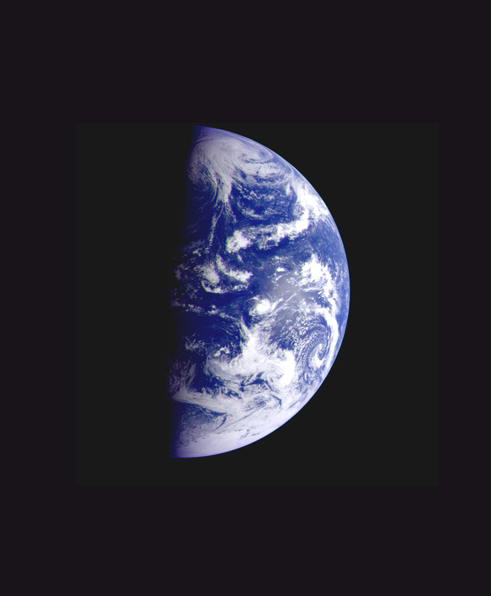

The Blue Planet
Earth is the third planet from the Sun and the only astronomical object known to harbor life. It's the largest of the four terrestrial planets and the only planet with liquid water on its surface.
Basic Facts
- Type: Terrestrial Planet
- Distance from Sun: 149.6 million km
- Diameter: 12,742 km
- Mass: 5.972 × 10²⁴ kg
- Surface Temperature: -88°C to 58°C
- Orbital Period: 365.25 Earth days
Atmosphere & Climate
- Atmosphere: Nitrogen (78%), Oxygen (21%)
- Surface Pressure: 1 atm (101.325 kPa)
- Ozone Layer: Protects from UV radiation
- Greenhouse Effect: Natural temperature regulation
- Weather Systems: Complex atmospheric circulation
- Climate Zones: Tropical, temperate, polar
Surface & Geography
- Land Area: 29.2% of surface
- Water Coverage: 70.8% of surface
- Continents: 7 major landmasses
- Oceans: 5 major ocean basins
- Mountains: Everest (8,848 m)
- Deepest Point: Mariana Trench (11,034 m)
Life & Biology
- Life Forms: 8.7 million estimated species
- Ecosystems: Diverse biomes worldwide
- Photosynthesis: Primary energy source
- Biodiversity: Highest in tropical regions
- Human Population: 8 billion+ people
- Evolution: 3.8 billion years of life
Internal Structure
- Crust: Continental and oceanic
- Mantle: Upper and lower layers
- Outer Core: Liquid iron-nickel
- Inner Core: Solid iron-nickel
- Magnetic Field: Protects from solar wind
- Plate Tectonics: Active crustal movement
Moon & Satellites
- Natural Satellite: The Moon
- Moon Distance: 384,400 km
- Artificial Satellites: 3,000+ in orbit
- Space Station: International Space Station
- Space Debris: 500,000+ objects tracked
- Space Agencies: 72 countries active
Fun Facts
🌍 Perfect Distance
Earth is in the "Goldilocks Zone" - not too hot, not too cold, just right for life.
💧 Water World
Earth is the only planet with liquid water on its surface, covering 71% of the planet.
🛡️ Magnetic Shield
Earth's magnetic field protects us from harmful solar radiation and cosmic rays.
🌱 Life Support
Earth's atmosphere contains exactly the right amount of oxygen for complex life to thrive.